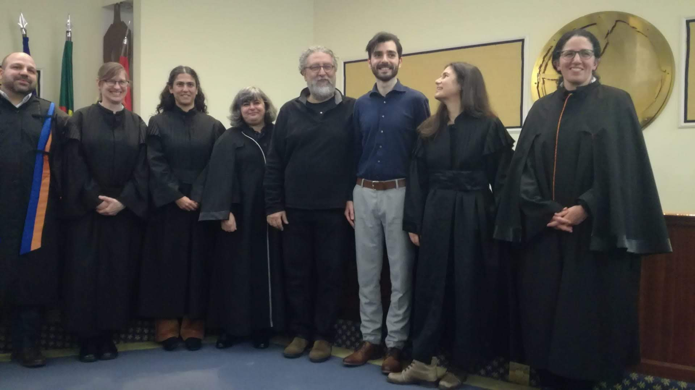

Posts
Hi, my name is…
I wrote this piece for those who have an interest in learning a bit about me and my professional traject so far.
I love coffee and would ideally invite you to join me for a cup or two. To compensate, here’s a picture of a morning coffee scene to get you in the mood to read the rest of the monologue:
In 2019, I earned my PhD in Social Psychology from ISPA - Instituto Universitario. During my PhD I divided my time between Portugal and the Netherlands, conducting research at William James Center for Research and Utrecht University.

My doctoral work resulted in contributions to the fields of social perception and psychophysical image classification methods like reverse correlation.
After obtaining my PhD, I moved into an industry job in pursuit of research with a more direct societal impact. I like to believe that goal was achieved during the time I spent at a Philips venture working on the development of automated clinical decision support systems. During this time my interest in the topic of human technology interaction awakened and I took an interest in roles where I could deepen my knowledge about the topic, and perhaps contribute to the domain in some way.
I found my first opportunity to pursue the new interest in a postdoc position at Utrecht University focusing on aspects of trust in AI and human-AI interaction in general. During this period I faced some challenges (naturally): adjusting back to the academic environment, catching up with a rapidly growing field of interdisciplinary research outside of the comfort zone (social cognition), and learning how to effectively split my time between research and teaching. At the same time, I learned much about how academics approach the topic of human-AI interaction, learned much about the relevance of Psychology knowledge to the impact of AI in society, and more importantly, met wonderful people including students and colleagues with whom I learned, and keep learning, from.
The emergence of ChatGPT by the end of 2022 had a strong impact on the research I was conducting, raising new questions and opening up new opportunities to do research. But arguably more important was the impact of generative AI chatbots on teaching practices, which prompted us all (or should have!) to start discussing the future of Education in a world increasingly infused with tools capable of mimicking human output. The impact of AI in Education sounded like a meaningful question to invest my time in. Currently, I am doing a second postdoc at Eindhoven University of Technology. There, I spend most of my time thinking about the impact of AI in Education together with an interdisciplinary team of researchers (Economics, Philosophy, Education), university staff and students.
In my free time, I enjoy playing music, hunting for specialty coffee, modern and retro games, catch up with my to-read list and travelling.
Date: 14 July 2024
Author: [M. Oliveira]